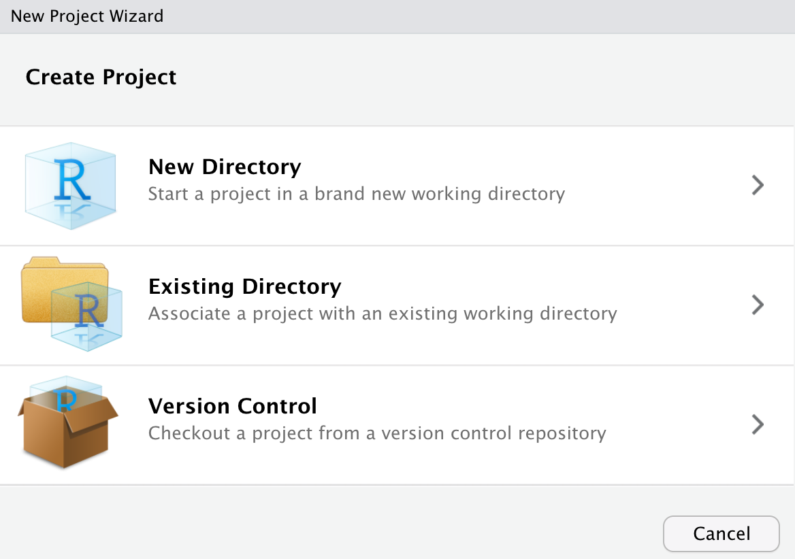
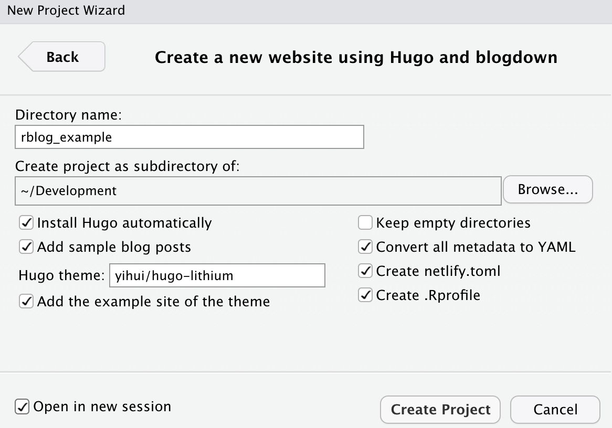
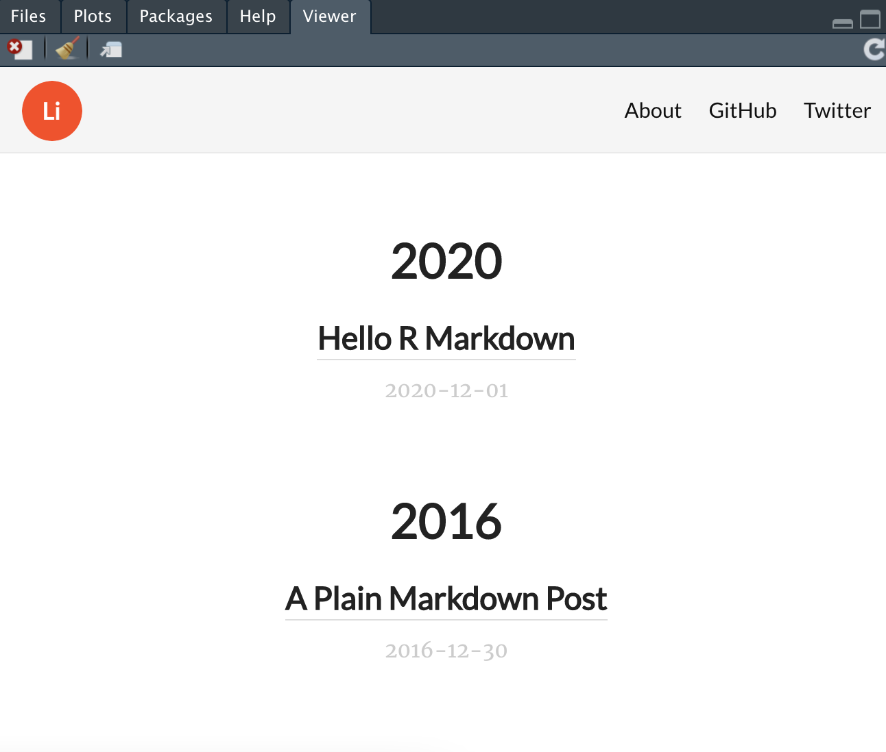

Website within a few code lines
This is a quick tutorial on how to create a blog with R and deploy it in Github Pages. I assume that R and Rstudio are already installed on your PC. If not, here is a link on how to set up the environment. Steps below are done in Rstudio.
Step 1. Install blogdown and hugo themes.
At first, let’s run these two commands in console. They will install blogdown and hugo.
install.packages("blogdown")
blogdown::install_hugo()Step 2. Create Rstudio project.
Now we can create a new project in 'File' \(\rightarrow\) 'New Project...' menu.
Choose "New Directory":

Then choose "Website using blogdown":

Fill in a directory and project name as shown in figure below:

Step 3. Customize Gihub pages
I want to publish this website via Github Pages but it requires some additional customization.
What you need is to create a new repository in Github.
In my case I call it rblogexample".
Below I will explain how to deploy the website to gihub.
Here is also a simple tutorial on how to create a website on github.
Step 4. Customize ‘config.yaml’
We need to modify config.yaml file as follows:
- Set up the base URL to the “root” of the web page (https://[user_name].github.io/[repo_name] in this case, for example I set it to https://annavarzina.github.io/rblogexample/)
baseurl: "https://annavarzina.github.io/rblogexample/"
- (Optional) Change the default /public folder to a custom folder of the repository (create it if it does not exist yet). In this example I use the folder /docs.
publishdir: "docs"
- (Optional) Add title
title: R blog example
- (Optional) Update Menu. Add your own links (Github/Twitter/Other)
menu:
main:
- name: About
url: /about/
- name: GitHub
url: https://github.com/rstudio/blogdown
- name: Twitter
url: https://twitter.com/rstudioStep 5. Build website
Now we can build our blog by running these commands:
blogdown::build_site()
blogdown::serve_site()Your website can be viewed in Rstudio viewer or browser (http://localhost:4321/rblogexample).

After it has been built, the sources were generated in the folder /docs or other folder which is defined in configurations.
In order to stop the site, run this command:
blogdown::stop_site()
If you want to personalize you blog, there is a variety of options to adjust styling with existing Hugo-themes, custom CSS or JavaScript. I don’t want to go deep here and provide too many detailst but I want to mention just a few things:
- Hugo themes. Update
themeinconfig.yamlwith any of https://themes.gohugo.io/. - Replace logo. Just use your own file and place it to
/docs/logo.pngpath. - CSS. For example, put it to
/static/css/custom.cssand updateconfig.yamlwithcustomCSS: ["css/custom.css"]inparams. - JavaScript. For example, put it to
/static/js/custom.jsand updateconfig.yamlwithcustomJS: ["js/custom.js"]inparams.
Step 6. Deploy to Github
First, we need to initialize git in the defined folder (/docs).
We can use Rstudio Terminal to create git repository.
So we write these commands:
cd docs
git init
git add .
git commit -m "Init blogdown site"
git branch -M mainAdd remote repository as your project
git remote add origin git@github.com:annavarzina/rblogexample.git
It is a good practice to connect to Github with SSH key.
Now we can upload to remote
git push -u origin main
After the deployment go to repository settings and scroll down to “Github Pages”.
Choose branch /main, root folder and click on Save button.
Your webpage styles will be updated in a while and you can enjoy it via link:
https://
Step 7. Create post
To make a post simply run new post function:
…
blogdown::new_post(title = "My first blog post", author = "annav", ext = ".Rmd")By default, it will be created with the extension .md.
I prefer R Markdown instead, so I explicitly define the extension .Rmd.
Step 8. Publish changes
In this step we need to commit the changes that were made and deploy them:
git add .
git commit -m "Create new post"
git push -u origin mainStep 9. Customize domain name (optional)
There is also an option to set your own domain name instead of github.io.
Github will only serve as a hosting then.
In repository settings in Github pages section add the domain name.
You also have to link the domain with github which is done with your DNS provider.
THere is a link on how a custom domain can be managed in Github.
Congratulations!
So now you can enjoy your new R blog! I am pretty happy with mine since I write mostly about programming topics, mathematics and data science with R markdown. It supports simple Markdown as well if you don’t need to include code snippets for example. In the end I provide a few references to read further about R blogging and github deployment.
References
Here are a few additional links for more information: